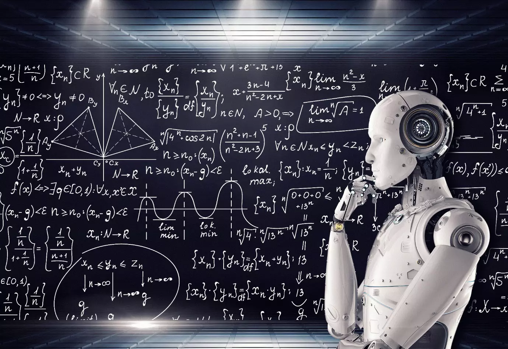

Welcome to this presentation on artificial intelligence! In this presentation, we'll be exploring the basics of AI and how it's used in the world today.
AI, or artificial intelligence, is the ability of a computer or machine to perform tasks that would normally require human intelligence, such as learning, problem-solving, and decision-making.
There are three main types of AI:
AI is used in a variety of fields, including:
Thank you for joining me on this journey through the world of AI! I hope you now have a better understanding of what AI is and how it's being used in the world today.